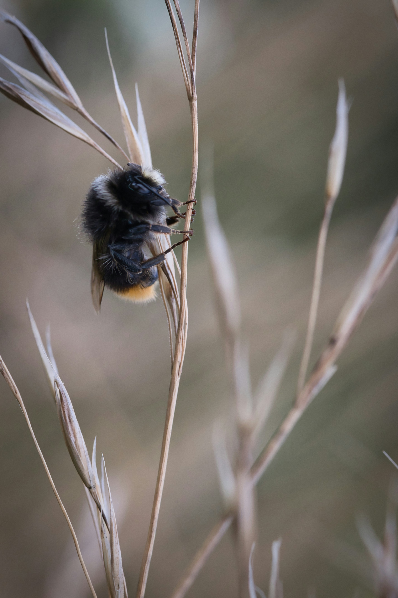
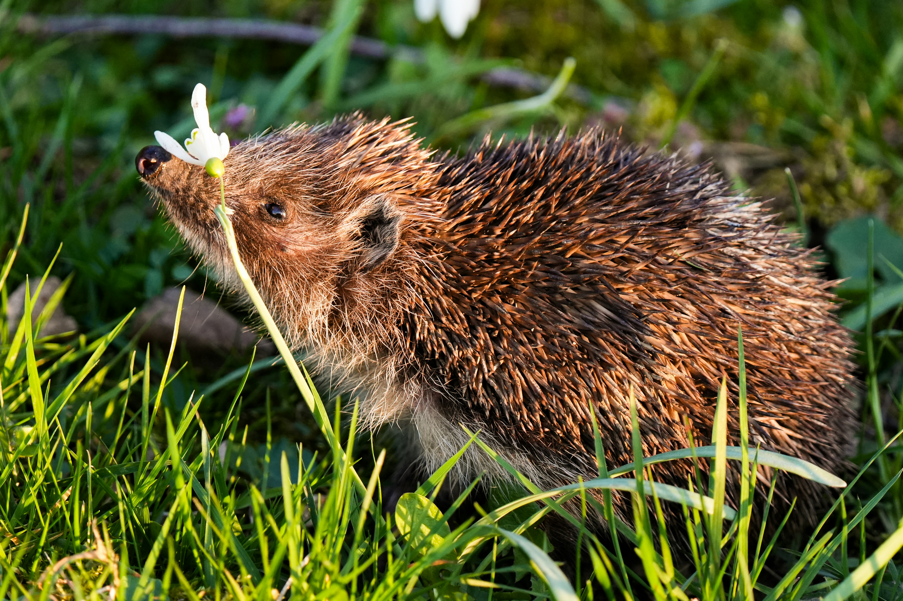

Page 5: Insects & Small Wildlife
1. Bumblebee

Bumblebees are fuzzy, social insects essential for pollinating wildflowers and agricultural crops. They collect nectar and pollen to feed their colonies and use a special process called buzz pollination to unlock pollen from flowering plants.
Learn more about bees on Wikipedia.
2. Hedgehog

Hedgehogs are small nocturnal mammals covered in thousands of stiff, protective quills made of keratin. When threatened, they curl into a tight prickly ball to protect their vulnerable faces and soft underbellies from natural predators.
Learn more about hedgehogs on Wikipedia.